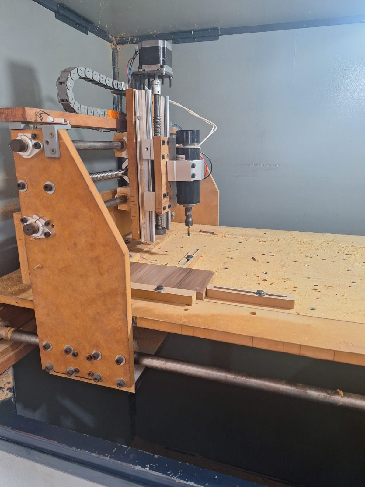
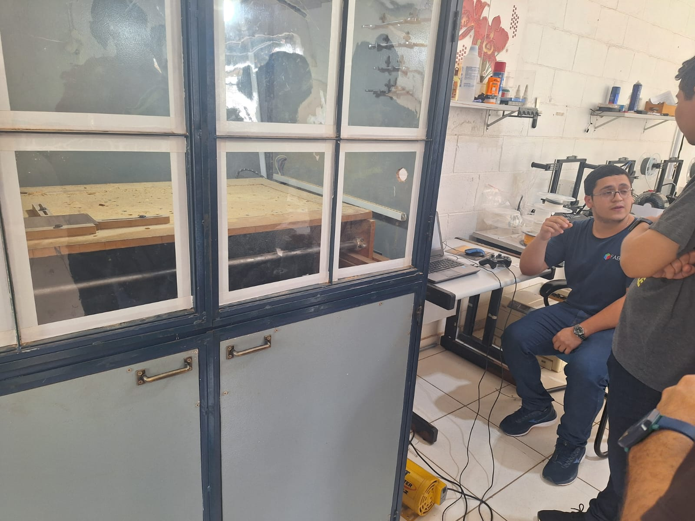
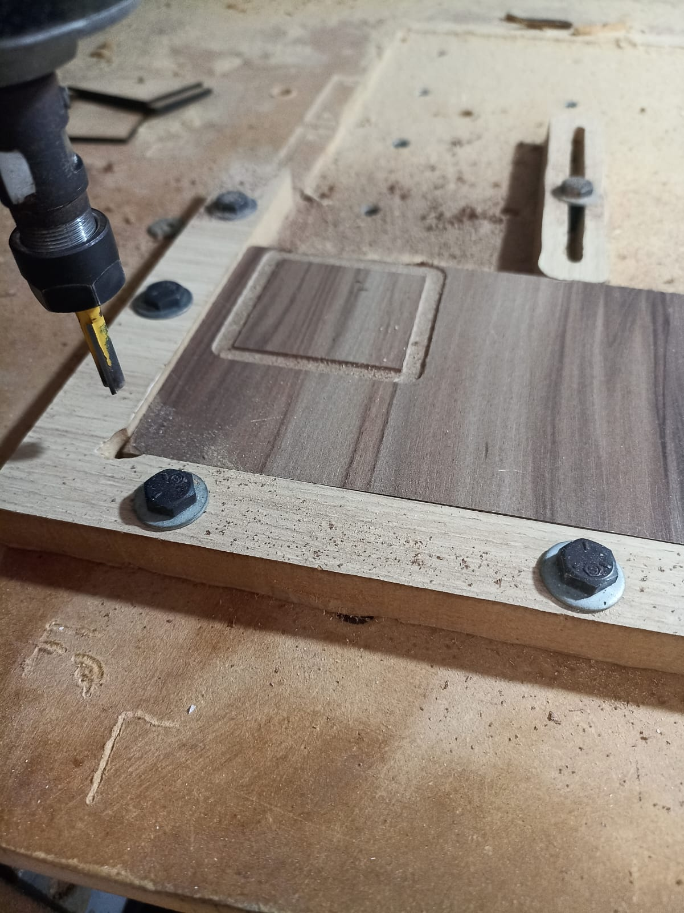

Chapter 4 Fresadora CNC: Usinagem de madeira
4.1 Teoria

A fresadora CNC para usinagem de madeira é uma ferramenta elétrica utilizada para cortar, moldar, esculpir e perfurar madeira a partir de uma fresa rotativa controlada por computador.No dia 19 de Abril de 2024, o discente Natãn Barbosa membro efetivo do FABLAB apresentou a fresa criada no laboratório a mesma possui três graus de liberdade, logo ela se movimenta nos eixos x, y e z.
O seu processo de fabricação inicia-se pela criação do projeto em algum software de desenho que então é convertido em um arquivo .gcode, caracterizado como um conjunto de comandos que a fresadora utilizará para mover a ferramenta de corte. Estando a parte computacional configurada, parte-se para a fixação do material na mesa de trabalho da fresadora e posteriormente para a seleção da fresa adequada e ajuste da profundiddade e velocidade de corte. Realizado todos os ajustes é então efetuado a fabricação do projeto onde a fresa rotativa será movida ao logo da superfície de madeira, removendo material conforme o necessário para se obter a peça desejada.
A fresadora CNC é caracterizada como uma máquia utilizado em processos de manufatura sbtrativa, uma vez que, temos um processo onde o material é removida de uma bloco maior para se criar uma peça desejada.
4.2 Prática
Para se ter um conhecimento prático prévio do funcionamento da fresadora, foi realizado a gravação de uma peça em formato de quadrado na máquina o que nos resultou na imagem apresentada na Figura(10)
A partir desta experiência adquirida em laboratório foi possível compreender que operar uma fresa CNC de forma eficaz exige conhecimento técnico e bastante treinamento, além de que este tipo de equipamento requer manutenção regular de forma a garantir o funcionamento adequado e prolongar a vida útil da máquina.